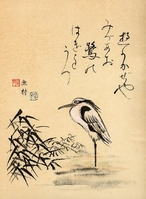

Japanese-Like Poems:
Several forms of poetry are traditional to Japan. Those known in the United States are primarily haiku and tanka. In fact, there are several magazines and journals that accept these forms only for publication. We will examine both of these forms, but because you will be allowed more latitude in subject matter and form, we are calling this lesson "Japanese-like" rather than traditional Japanese forms.
HAIKUHaiku poems are characterized by content, language, and form. Of the three elements, form is the least important. The content of haiku poems is primarily nature. Usually there are no similies or metaphors, nor are there many adjectives. The most common form is three lines, the first and third being the same length and the middle one being a little longer. In English-speaking countries this has been translated into a 5/7/5 syllable structure. However, this is not set in stone. In Japanese, it is 17 sounds. In English this translates to somewhere between 12 and 15 syllables. Therefore, if you do not have EXACTLY 17 syllables it is acceptable. The most famous writer of haiku is Matsuo Basho and his most famous poem is:
old pond...
a frog leaps in
water's soundTANKAA tanka is a mood piece, usually about love, seasons, sadness, or how short life is. Tankas use strong images and often have literary devices such as simile and metaphor. A tanka is short and usually has only five lines. Instead of counting syllables, you count ACCENTED syllables. The following pattern of ACCENTED syllables works well in English for a tanka: 2/3/2/3/3. Some claim the tanka contains 5/7/5/7/7 syllables. Actually, you can use either method for determining the sounds in this kind of poem. Here is an example of a tanka:
Beautiful mountains
Rivers with cold, cold water.
White cold snow on rocks
Trees over the place with frost
White sparkly snow everywhere.DIRECTIONS:Now that you are familiar with the haiku and tanka forms of poetry, you are to write at least one of each form. By writing more than one of each kind, you become familiar with the forms and used to following set patterns for writing different kinds of poetry.